Multi-user access
This article describes how to share a database and connect to it from other devices.
Please note, the synchronization process is not automated and tapping the Synchronize button is required to initiate data sync.
To share a database to be accessed by multiple users, you should follow the steps given below.
1) To share a database with other user, open your Dropbox web user interface in any available web browser. Click on MobiDB directory to see the list of databases available for sharing. Select the database you would like to share and press Share button.
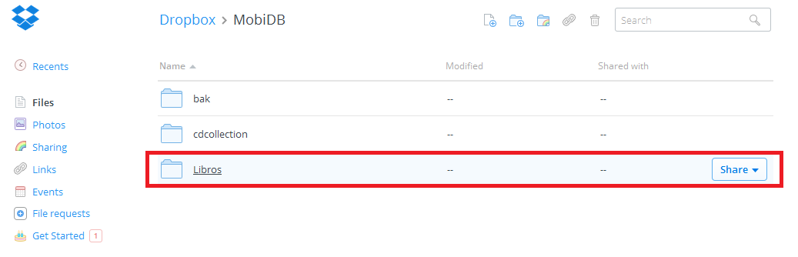
Let's presume we would like to share a database named Libros.
2) After pressing the Share button, select Invite people to collaborate option.
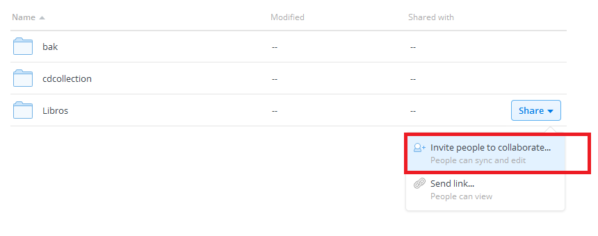
3) Select the user you would like to share your database with and press Share folder button to proceed.
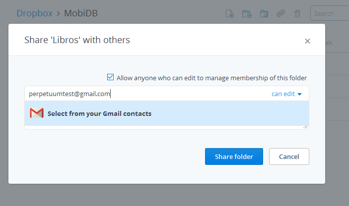
Connecting to a shared database
1) The Shared folder invitation will appear in Dropbox of the user you would like to share your database with.
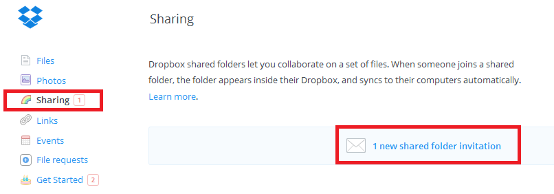
2) The user should press Accept button to confirm.
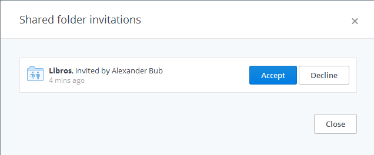
3) The Libros database is now linked to the root folder of user's Dropbox file system.
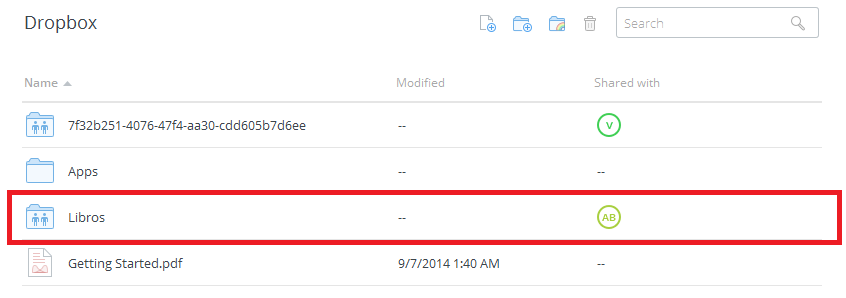
4) To be able to access the database from user's device, it is necessary to move the database to the root MobiDB folder. Right click on the Libros database and select Move.

5) Select MobiDB folder located in the root of your Dropbox file system and press Move to confirm. In case no MobiDB folder is available in the folders' list, it is necessary to create such folder manually and add the Libros database to it.
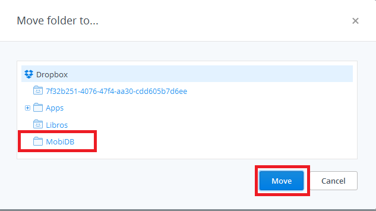
6) After the Libros database is moved to root MobiDB folder it can be accessed from the user's device.
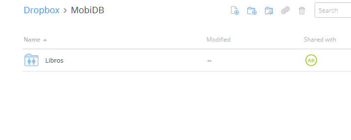
7) To connect to the shared database on user's device the following steps should be performed:
- Select Connect to MobiDB Dropbox base from the main menu options list
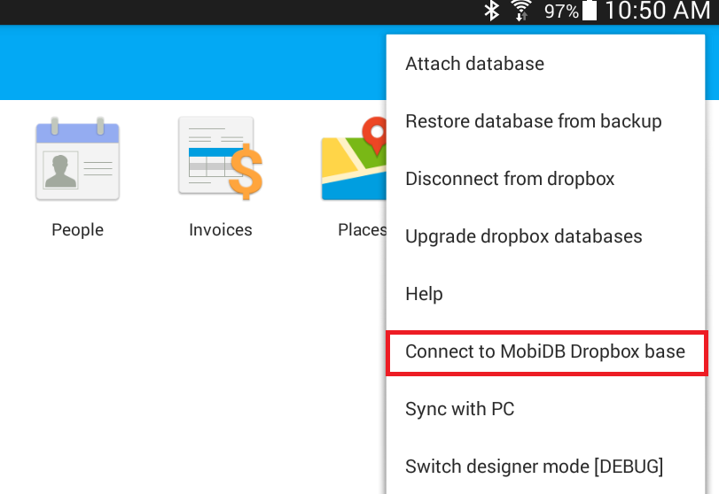
- The shared Libros database is now visible in the list of available databases. Select the Libros database to proceed.
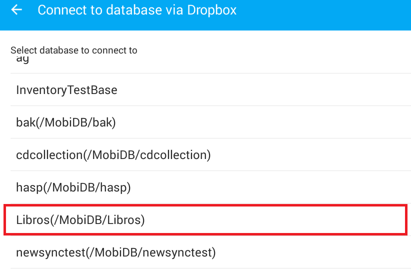
- Specify the name for this database to be displayed on user's device.
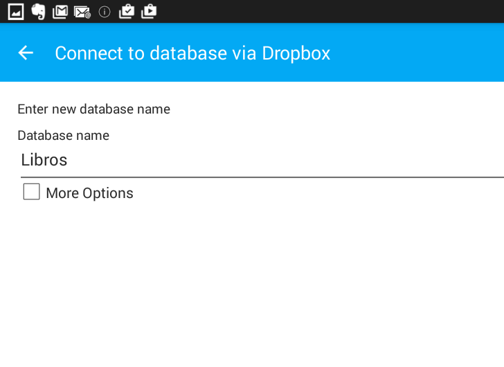
- The Libros database is now connected and can be used in cooperative mode.
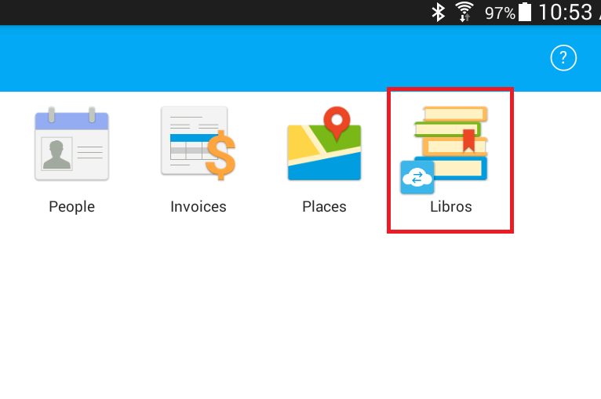